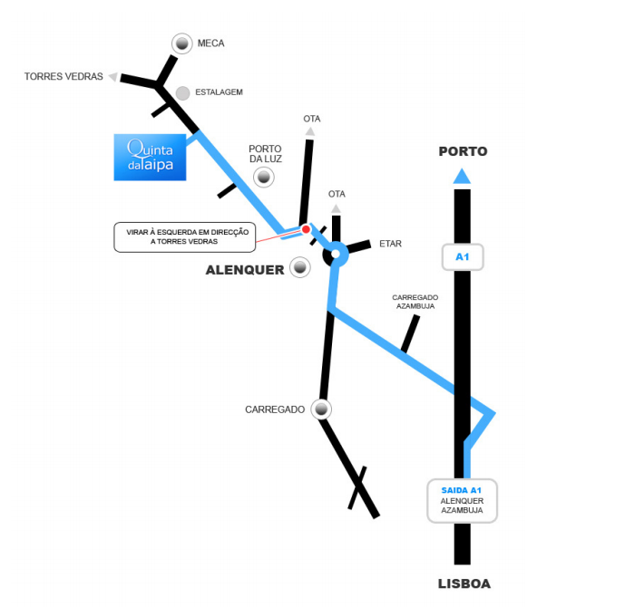

If you need accomodation for the wedding night, here are a couple of places near Quinta da Taipa:
Quinta da Taipa is in Porto da Luz, Alenquer, about 30min from Lisbon.

GPS: N 39º3'57" | W 9º1'58"
Download instructions to get to Quinta da Taipa here.
Please let us know if you're attending the event of the year, until April 21st 2013.
If you have any food alergies or special dietary preference, just let us know.
If you have smarthphone you can join us on Google Plus.
When confirming your attendance throught our form, send us your emails so we can add you to the Google Event.
On the day of the party, just activate Party Mode and check all the photos out!
More info on Party mode do Google Plus.
Home